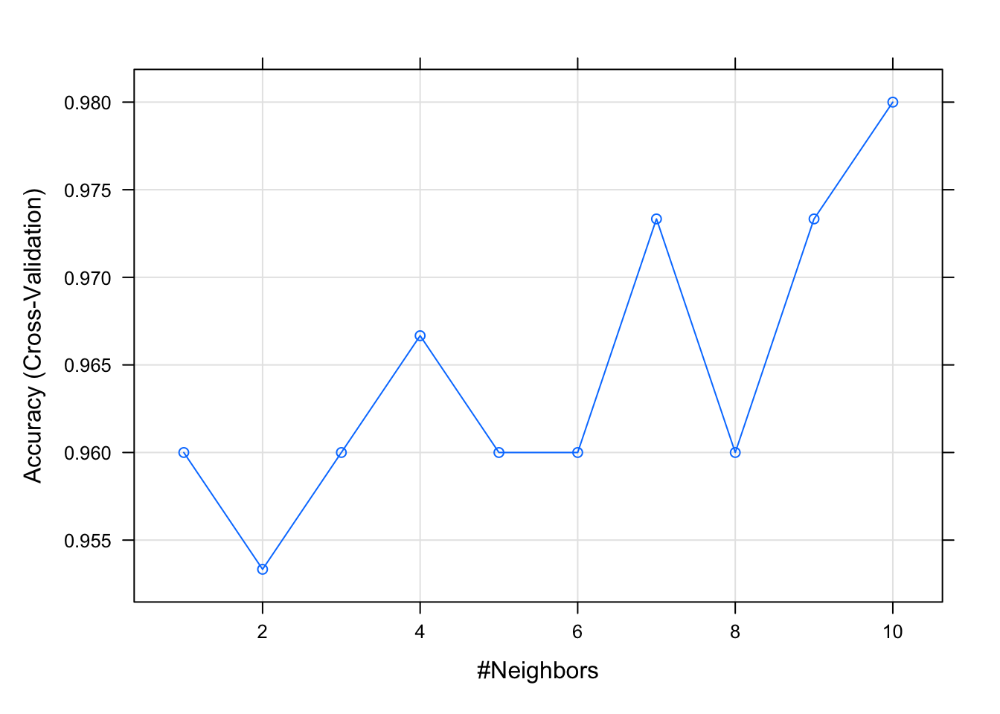
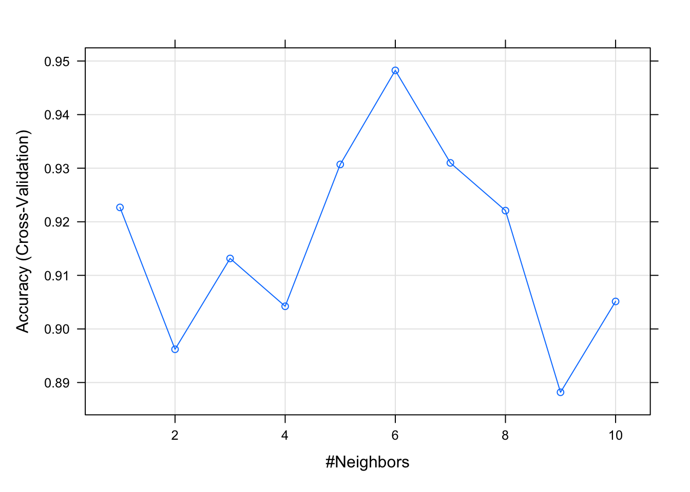

Chapter 16 K Nearest Neighbors Revisited: Cross Validation Added Tips for This Document
library(caret)
library(tidyverse)
theme_set(theme_minimal())An excellent source for the caret is https://topepo.github.io/caret/index.html
The following code is from https://stats.stackexchange.com/questions/318968/knn-and-k-folding-in-r
trControl <- trainControl(method = "cv",
number = 5)
fit <- train(Species ~ .,
method = "knn",
tuneGrid = expand.grid(k = 1:10),
trControl = trControl,
metric = "Accuracy",
data = iris)
fit## k-Nearest Neighbors
##
## 150 samples
## 4 predictor
## 3 classes: 'setosa', 'versicolor', 'virginica'
##
## No pre-processing
## Resampling: Cross-Validated (5 fold)
## Summary of sample sizes: 120, 120, 120, 120, 120
## Resampling results across tuning parameters:
##
## k Accuracy Kappa
## 1 0.9600000 0.94
## 2 0.9533333 0.93
## 3 0.9600000 0.94
## 4 0.9666667 0.95
## 5 0.9600000 0.94
## 6 0.9600000 0.94
## 7 0.9733333 0.96
## 8 0.9600000 0.94
## 9 0.9733333 0.96
## 10 0.9800000 0.97
##
## Accuracy was used to select the optimal model using the largest value.
## The final value used for the model was k = 10.plot(fit)
I’d like to see whether this will help build a model to improve the classification of pituitary neuroendocrine tumors (pituitary adenomas).
A copy of the patmandx data from PitAdTMA9.0 is already in the test book data directory.
pit <- read_csv("data/patmanDx.csv")## Rows: 157 Columns: 36## ── Column specification ────────────────────────────────────────────────────────
## Delimiter: ","
## chr (12): Dx, SurgPathNo, CAM5.2Pattern, newDx, finDx, villaDx, villaCode, N...
## dbl (24): CaseID, Pit1Median, SF1Median, ASUMedian, PRLMedian, GHMedian, ACT...##
## ℹ Use `spec()` to retrieve the full column specification for this data.
## ℹ Specify the column types or set `show_col_types = FALSE` to quiet this message.df <- pit %>% select(SF1Median, Pit1Median, TPITMedian, PRLMedian,
GHMedian, TSHMedian, LHMedian, FSHMedian, ACTHMedian, ASUMedian,
GATA3Median, manDx) %>% na.omit()
table(df$manDx)##
## ACTH GH GON NULL PIT1 PLUR PRL UNK
## 23 16 77 10 4 1 15 1# Now, the trouble with null cell adenoma is that the diagnosis abbreviation "NULL" is mistaken for the NULL value. I'll need to change this. The following is an ugly way to do this.
df <- df %>% mutate(manDx = case_when(
manDx == "NULL" ~ "Null",
TRUE ~ manDx
))
table(df$manDx)##
## ACTH GH GON Null PIT1 PLUR PRL UNK
## 23 16 77 10 4 1 15 1Now I’ll ape the code from above and see whether it works.
trControl <- trainControl(method = "cv",
number = 5)
fit <- train(manDx ~ .,
method = "knn",
tuneGrid = expand.grid(k = 1:10),
trControl = trControl,
metric = "Accuracy",
data = df)## Warning: predictions failed for Fold3: k= 1 Error in dimnames(x) <- dn :
## length of 'dimnames' [2] not equal to array extent## Warning: predictions failed for Fold3: k= 2 Error in dimnames(x) <- dn :
## length of 'dimnames' [2] not equal to array extent## Warning: predictions failed for Fold3: k= 3 Error in dimnames(x) <- dn :
## length of 'dimnames' [2] not equal to array extent## Warning: predictions failed for Fold3: k= 4 Error in dimnames(x) <- dn :
## length of 'dimnames' [2] not equal to array extent## Warning: predictions failed for Fold3: k= 5 Error in dimnames(x) <- dn :
## length of 'dimnames' [2] not equal to array extent## Warning: predictions failed for Fold3: k= 6 Error in dimnames(x) <- dn :
## length of 'dimnames' [2] not equal to array extent## Warning: predictions failed for Fold3: k= 7 Error in dimnames(x) <- dn :
## length of 'dimnames' [2] not equal to array extent## Warning: predictions failed for Fold3: k= 8 Error in dimnames(x) <- dn :
## length of 'dimnames' [2] not equal to array extent## Warning: predictions failed for Fold3: k= 9 Error in dimnames(x) <- dn :
## length of 'dimnames' [2] not equal to array extent## Warning: predictions failed for Fold3: k=10 Error in dimnames(x) <- dn :
## length of 'dimnames' [2] not equal to array extent## Warning in nominalTrainWorkflow(x = x, y = y, wts = weights, info = trainInfo, :
## There were missing values in resampled performance measures.fit## k-Nearest Neighbors
##
## 147 samples
## 11 predictor
## 8 classes: 'ACTH', 'GH', 'GON', 'Null', 'PIT1', 'PLUR', 'PRL', 'UNK'
##
## No pre-processing
## Resampling: Cross-Validated (5 fold)
## Summary of sample sizes: 118, 118, 116, 119, 117
## Resampling results across tuning parameters:
##
## k Accuracy Kappa
## 1 0.9226806 0.8824466
## 2 0.8962028 0.8402102
## 3 0.9131568 0.8665709
## 4 0.9042282 0.8523781
## 5 0.9307061 0.8938411
## 6 0.9482553 0.9210779
## 7 0.9309934 0.8949336
## 8 0.9220854 0.8809015
## 9 0.8881773 0.8288791
## 10 0.9051314 0.8552866
##
## Accuracy was used to select the optimal model using the largest value.
## The final value used for the model was k = 6.plot(fit)
Note that if I run this multiple times, I get multiple different optimal values of k. set.seed(1234)* would render a single, reproducible (if not “correct”) value.
So ostensibly, this works, but I have a couple important items to address:
- A fundimental lack of understanding “what’s going on under the hood.”
- A bunch of warnings that I’m simply ignoring for now.